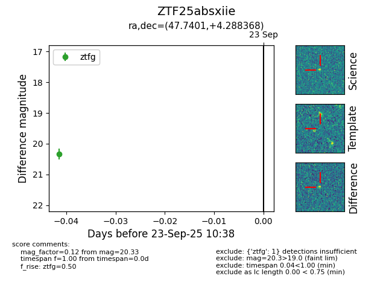

FINK: ZTF25absxiie
Lasair: ZTF25absxiie
ALeRCE: ZTF25absxiie
ZTF25absxiie (ztf,fink)
equatorial (ra, dec) = (47.7401,+4.28837)
galactic (l, b) = (175.3066,-43.94413)

last ztfg=20.33
1 ztfg detections